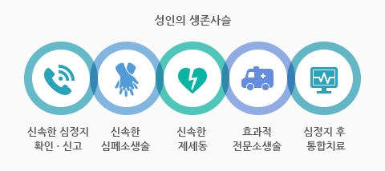
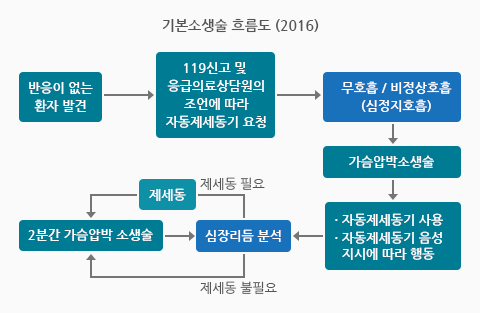

성인심폐소생술 방법
 1. 신속한 심정지 확인·신고 - 환자를 발견한 목격자가 신속하게 심정지를 인지하고, 심정지 환자가 발생했음을 119에 신고한다.
2. 신속한 심폐소생술 - 심정지 목격자가 신속하게 심폐소생술을 실시한다.
3. 신속한 제세동 - 심정지 환자가 발생한 현장 주변에 비치되어 있는 자동제세동기나 119구급차에 비치된 자동제세동기를 이용하여 현장에서 제세동 처치를 신속하게 실시한다.
4. 효과적 전문소생술 - 심정지 환자가 의료기관에 도착한 뒤에 의료진에 의한 효과적인 전문소생술이 시행된다.
5. 심정지 후 통합치료 - 심정지 환자의 심장박동이 회복된 뒤에 전문 의료기관에서 저체온치료. 관상동맥중재술 등의 통합적인 중환자 치료가 시행된다.
성인심폐소생술 응급처치
1. 의식 확인-양어깨를 두르리며 말을 걸고 눈과 귀로 심정지 및 무호흡 유무를 확인한다.(반응과 호흡이 있으면 심정지 아님)
-일반 구조자가 외상환자를 구조할 때에는 꼭 필요한 경우에만 환자를 이동시키도록 한다. 예) 건물에 화재가 발생한 경우 등 현장이 안전하지 않은 상황
2. 도움 및 119신고 요청
-주변사람에게(꼭 집어서) 119신고를 부탁하고 자동심장충격기를 요청한다.
3. 흉부압박점 찾기
-먼저 환자의 가슴뼈의 아래쪽 1/2중앙에 한 손바닥을 올려 놓고 그 위에 다른 손을 겹친다.
* 손가락이 가슴에 닿지 않도록 주의
-가슴(흉부)압박
흉골 1/2아래 부분을 손꿈치로 30회 압박한다.
성인은 5~6cm의 깊이로, 팔꿈치가 굽지 않게 옆에서 보았을때 90도가 될 수 있도록 압박한다.
* 분당 100 ~ 120회의 속도로 가슴압박을 시행한다. 적절한 가슴압박과 이완을 하는 이유는 정확한 깊이로 가슴압박을 강하게 하면, 그만큼 피가 많이 짜여지게 되고, 압박한 만큼 이완시키면 다시 심장에 피가 되돌아오기 때문에 조금 더 효율적인 가슴압박이 이루어 질 수 있다.
4. 가슴(흉부)압박하기
-분당 100 ~ 120회의 속도로, 성인 약 5cm 깊이로 압박, 압박과 이완의 시간은 같은 정도로 하고, 각각의 압박 후에는 가슴이 완전히 올라오도록 해야 한다.
* 압박 시 양팔을 쭉 편 상태에서 체중을 실어서 환자의 몸과 수직이 되게 눌러줘야 한다.
5. 인공호흡 2회 시행
-먼저 머리를 젖혔던 손의 엄지와 검지로 환자의 코를 잡아 막는다.
-코를 막고 구조자의 입을 완전히 밀착하여 정상호흡을 약 1초 동안 2회 숨을 불어 넣는다.(인공호흡이 어려울 경우 가슴압박을 지속적으로 시행)
6. 가슴(흉부)압박과 인공호흡의 반복
-이후에는 30회의 가슴압박과 2회의 인공호흡을 119구급대원이 현장에 도착할 때까지 반복해서 시행한다.